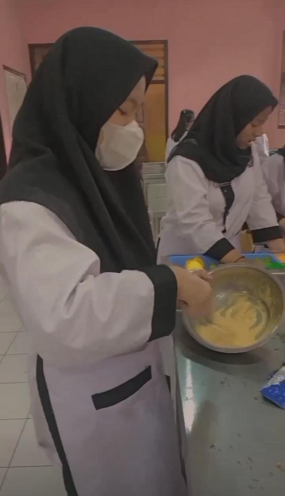

Kembali ke Menu
Tata Boga
Tata boga adalah salah satu disiplin ilmu terkait dengan pengetahuan mengenai boga (seni mengolah masakan) yang meliputi persiapan pengolahan sampai dengan menghidangkan makanan itu sendiri yang bersifat tradisional maupun internasional.
